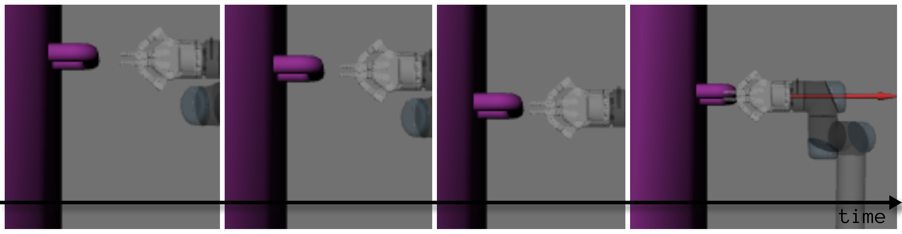
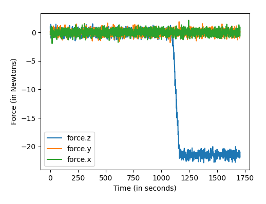

Robotics & Software Engineer — bridging industrial AI with autonomous systems, force-controlled manipulation, and machine learning–driven automation.
I'm a Robotics & Software Engineer with deep expertise in ROS/ROS2, C++, Python, and robotic system integration — gained through hands-on research at Fraunhofer IPA, one of Europe's premier applied science institutes.
Holding a Master's in Mechatronics and currently pursuing an M.Eng. in Applied AI for Digital Production Management, I'm laser-focused on fusing artificial intelligence with industrial robotics — building smarter, adaptive systems for the factories of tomorrow.
My work spans trajectory validation, compliant manipulation pipelines, computer vision defect detection, and ML-driven fault prediction — always backed by rigorous experimentation and clean, maintainable engineering.


Open to robotics engineering roles, research collaborations, and AI/automation projects across Germany and Europe.